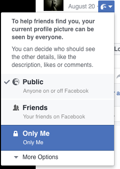
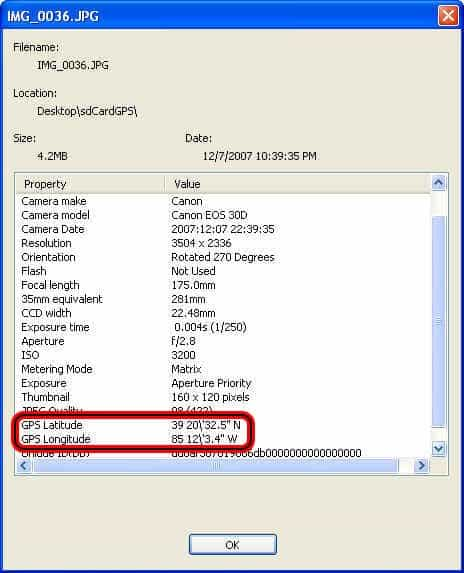
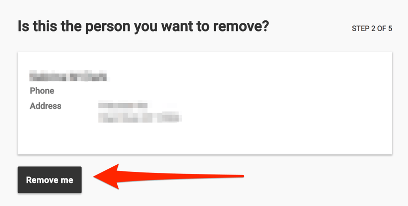

Jack Hughes is an outspoken young heterosexual white male capitalist who likes to offend idiots both online and in person. You can follow him on Twitter.


We live in a day and age where left wing extremists and blue-haired cunts feel like they’re doing a public service by making life hell for masculine men who make no apologies for refusing to date transgenders or standing against open borders. A good example of this is when Roosh was banned from the UK for speaking out against militant homosexuality, even though he hasn’t called for violence, has no criminal record, and in general is not a threat.
If you’re on Twitter, you’ve probably seen the phrase “Twitter do ya thing”, where low IQ millennials attempt to get Trump supporters fired and blacklisted from their careers by calling their place of work or school. While there is no such thing 100% anonymity when a telecommunications device is involved, there are some basic, common sense steps you can take to avoid being a victim.
A VPN encrypts the traffic between your computer and network in addition to hiding your IP address. Using a VPN ensures trolls can’t find your real IP address and then call your internet service provider to gain information about you through social engineering. The US recently passed a law allowing ISP’s to sell your data to marketers for profit, so at this point using a paid VPN service that doesn’t keep logs is just good internet hygiene.
Just by operating your social media accounts or blog under an alias, you take away 90% of what the left-wing mob has to work with. While I’m not saying they deserved it, most of the people who are successfully doxed by gender fluid womyn’s studies majors have far too much pointless personal information on their profiles. You posting under your legal name and having your exact city in your bio is pointless info that can only serve to harm you.
It sounds painfully simple, but one of the most popular ways Anonymous-affiliated basement dwellers glean information such as your IP Address or remotely install a keylogger onto your device is by sending you a URL via direct message to click on.
Do not click on any weird looking URL’s, in fact, don’t click any URL’s at all. Ask the message sender what the URL is about, then Google it yourself. Frequent scans of your devices with programs like Malwarebytes can’t hurt.

Friends list? Private. Email address? Private. Workplace? Don’t post it. Date of birth? Private. Limit advertising tracker? On. Location Services? ALWAYS off for photos. An experienced cybers-stalker’s favorite way to find their victim’s home address is by analyzing the metadata of a photo.
This isn’t a cybersecurity blog so I won’t get too technical but you can save yourself from a great headache by going into your device’s location settings and making sure your camera never uses location info.

Even the most experienced cyber vandal will have a hard time getting into your iCloud account with that video of you throwing up in a back alley after getting shitfaced drunk if it requires a code to be sent to your phone in tandem with a password.
Roboform password manager
There are several very cheap password managers out there that generate almost impenetrably strong, unique passwords for each individual site. In addition, most will notify you when a website you have an account on has had a data breach and your password has been leaked.
This is critical because many people use the same weak password for each individual site, and legions of dorks like Anonymous have access to lists of leaked passwords and email addresses, which they keep a record of to ‘try their luck’ in case someone uses the same credentials elsewhere.
A great website to find out how much information about you is out there is Pipl. Go to Pipl and search your name, email address, and any current or former usernames you’ve used on social media. See if they match each other. For example, if your name or true email address pops up when you search a username of yours, then you’re liable to get doxed if you piss someone off.
If you live in the United States, chances are your name, home/email addresses, and phone number are being sold for profit among data brokers and people search websites. Some have more of their personal information out there than others but chances are if this is the first you’ve heard of this, you have more info about you that’s readily available online than you would like. Use Expeal to make sure your information isn’t displayed.
Thankfully if you’re a US Resident these sites are required by law to comply with your opt-out request and if you’re an EU Resident, it may be illegal for them to even collect the info in the first place.

Thankfully for us, our opponents aren’t very smart or resourceful people. If you practice basic common sense, you most likely will never have to worry about this happening to you.
Read More: How To Securely Communicate And Meet With Thought Criminals